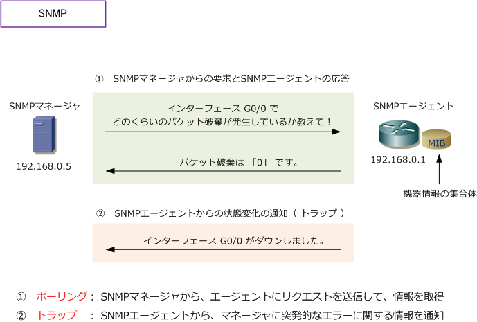
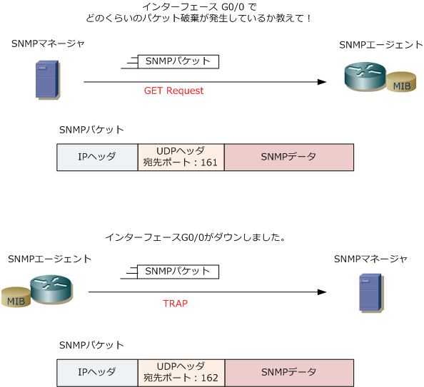
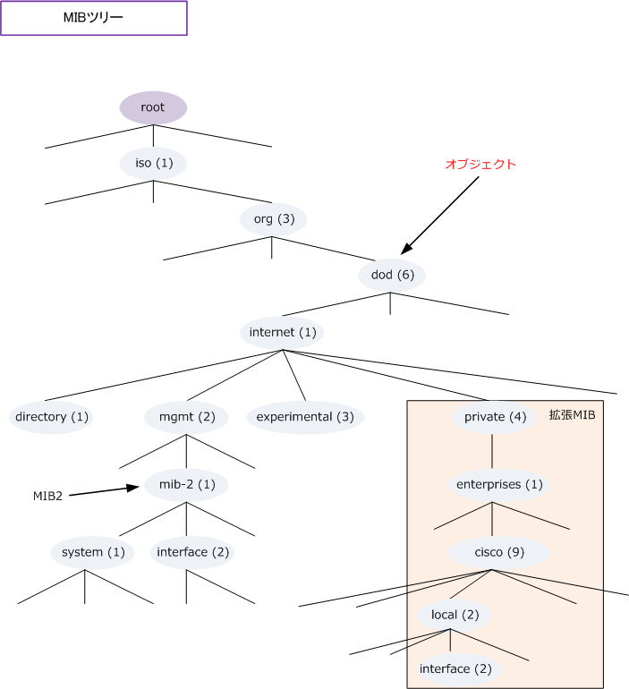
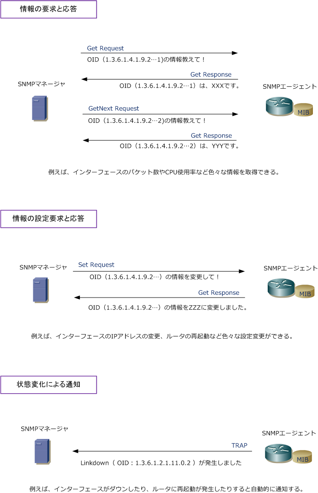

SNMP
SNMPとは
SNMP (Simple Network Management Protocol) は、ルータ、スイッチ、サーバなどTCP/IPネットワーク に接続された通信機器に対し、ネットワーク経由で監視、制御するためのアプリケーション層プロトコルです。 SNMPを利用することにより、導入したネットワーク機器を監視することができるので、ネットワークに障害 が発生した場合にどの機器に障害が発生したのかをすぐに突き止められるなど、迅速な障害復旧に役立ちます。
SNMPの構成要素
SNMPは、管理する側のSNMPマネージャ、管理される側のSNMPエージェントの2つにより構成されます。 SNMPv1、SNMPv2c、SNMPv3のバージョンがあり、SNMPv3ではセキュリティ機能が強化されています。 最近は、サーバなどに高価なSNMPマネージャのソフトウェアをインストールしてSNMPマネージャを導入 するのではなく、クライアントPCに無償のSNMPマネージャをいれて導入するようなケースなどもあります。 ※ 代表的なSNMPマネージャ：net-snmp（オープンソース）、JP1/Network Node Manager i（HITACHI）、TWSNMP Manager
| 構成要素 | 役割 | 使用機器 |
|---|---|---|
| SNMPマネージャ | SNMPエージェントに対する情報の要求や監視などを行う | Windowsサーバ、Linuxサーバなど |
| SNMPエージェント | SNMPマネージャからの要求への応答、状態変化時の通知を行う | ルータ、スイッチ、サーバなど |

SNMPマネージャからSNMPエージェントに問い合わせられる内容は、この他にCPU使用率、メモリ使用率 インターフェースのリンクアップ、ダウン状態、トラフィック量、MTUやSpeed/duplexの状態も確認可能。
SNMPのトラフィック
SNMPエージェントがUDP（ポート番号161）を使用して、SNMPマネージャがUDP（ポート番号162）を 使用しています。従って、SNMPマネージャからSNMPエージェントへの問合せは、SNMPエージェントへの 宛先ポートとしてUDP（ポート番号161）が使用されます。一方、SNMPエージェントからSNMPマネージャ へのトラップ通知は、SNMPマネージャへの宛先ポートとして、UDP（ポート番号162）が使用されます。

MIB ( ミブ ) とは
MIB (Management Information Base) とは、SNMPエージェントが持っている機器情報の集合体のこと。 SNMPマネージャとSNMPエージェントはこのMIBをやりとりすることで、SNMPエージェントのCPU使用率、 インターフェースの使用状況等を確認しています。MIBにより分類された情報はツリー構造で管理されます。
MIBにある情報の1つ1つをオブジェクトと言います。例えばツリーの上から「iso、org、dod、internet」 などがオブジェクトです。どのオブジェクトもOID (オブジェクトID)で示されます。OIDは、MIBツリーの 階層を通るパスを表すものです。例えばオブジェクトの「dod」は「iso⇒org⇒dod」を辿っていくことから 「dod」のOIDは「1.3.6」です。例えば「cisco」のOIDは 1.3.6.1.4.1.9。rootから順にピリオドで区切る。

このMIBには、標準MIBと拡張MIBがあります。標準MIBは標準化されているものですが、MIB1とMIB2が あります。現在ではMIB2を使用するのが主流です。拡張MIBはベンダ固有のもの（ciscoなど）があります。
MIBは、SNMPエージェントにて保持しているものですが、SNMPマネージャはエージェントの保持している MIBの内容から現在の状態を判断するため、SNMPマネージャにも、MIBの情報をインストールする必要が あります。SNMP管理する機器のMIBの情報（MIBファイル）は、メーカのサイトからダウンロードできます。 ※ Cisco の場合SNMPオブジェクトナビゲータを利用すれば、ツリー構造の情報、各OIDの説明情報、MIBファイルが得られます。
RMON（Remote Monitoring）とは
RMON（アールモン）は、遠隔地にあるLANネットワークの通信状況を監視する仕組みのことです。SNMPで 利用する通常のMIBは、例えばネットワーク機器のインターフェースや機器単体を監視するパラメータ群から 構成されていますが、RMONのMIBではネットワークの回線を監視するパラメータ群から構成されています。 RMONにより通信トラフィックの統計情報が得られます。
SNMPメッセージ
SNMPマネージャとSNMPエージェントがやりとりするメッセージは大きく5つがあります。
| SNMPメッセージ | 送信側 | 意味 |
|---|---|---|
| Get Request | SNMPマネージャ | SNMPエージェントから得たい情報を、OIDを指定して要求 |
| GetNext Request | SNMPマネージャ | 直前に指定したOIDの次のOIDを指定して要求。 |
| Set Request | SNMPマネージャ | SNMPエージェントの設定変更を行いたい場合、OIDを指定して要求 |
| Get Response | SNMPエージェント | SNMPマネージャから要求されたOIDに対して、値を挿入して返信 |
| TRAP（Trap） | SNMPエージェント | SNMPエージェントが機器の状態に変化があった場合、自発的に送信 |
